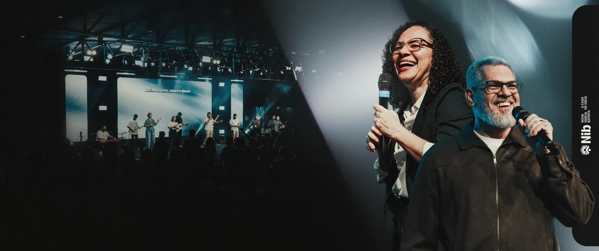

Boas-vindas, Jéssica
Sua igreja na palma da mão
Na inicial você encontra a palavra do dia, os avisos e os atalhos para tudo o que precisa.
Entre para acompanhar a agenda, contribuir, encontrar sua célula e orar com a comunidade.
Versão de teste: nada do que você digitar é enviado ou guardado. Use dados fictícios.
Na inicial você encontra a palavra do dia, os avisos e os atalhos para tudo o que precisa.
Veja cultos, escola bíblica e eventos no calendário e acompanhe suas inscrições.

Dízimos e ofertas com os dados oficiais da igreja, sempre à mão quando você precisar.
Encontre uma célula perto de você e compartilhe pedidos no Caderno de oração.
Seu cadastro, encontros e próximos passos na comunidade.
Versão de teste · Cadastros fictícios; dados bancários reais de referência · Alterações reiniciam ao recarregar.